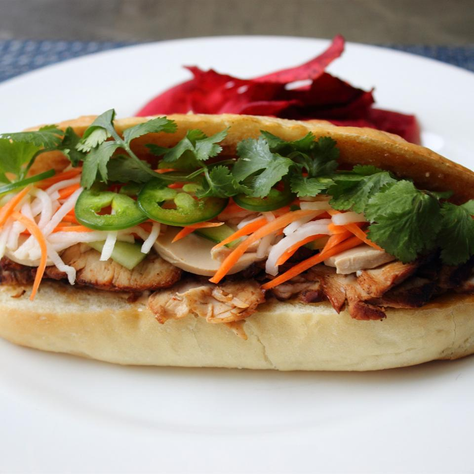

Banh Mi

What is Banh Mi?
In Vietnamese cuisine, bánh mì or banh mi is a short baguette with thin, crisp crust and soft, airy texture. It is often split lengthwise and filled with savory ingredients like a submarine sandwich and served as a meal, called bánh mì thịt. Plain banh mi is also eaten as a staple food.
Ingredients
- ¼ cup julienned (2-inch matchsticks) daikon radish
- ¼ cup julienned (2-inch matchsticks) carrots
- 1 tablespoon seasoned rice vinegar
- ¼ cup mayonnaise
- 1 teaspoon hoisin sauce, or to taste
- 1 teaspoon sriracha hot sauce, or more to taste
- 1 crusty French sandwich roll
- 4 ounces cooked pork roast, thinly sliced
- 2 ounces smooth pate, thinly sliced
- 6 thin spears English cucumber, diced
- 6 thin slices jalapeno pepper, or more to taste
- ¼ cup cilantro leaves
Directions
- Preheat oven to 400 degrees F. Line a baking sheet with aluminum foil.
- Toss julienned daikon and carrot with seasoned rice vinegar to coat well. Let sit until veggies get slightly limp, 15 to 20 minutes. Drain and set aside or refrigerate.
- Mix the mayonnaise, hoisin sauce, and sriracha in a small bowl.
- Split the French roll just enough so you can open it like a book. If you like, pull out some of the bread from the top half to better accommodate the filling.
- Spread the interior surfaces of the roll liberally with the mayo mixture. Transfer roll to prepared baking sheet, cut side up. Bake in preheated oven until crisp, heated through and edges start to brown, about 7 minutes.
- Place sliced pork, pate, cucumber, picked daikon and carrots, jalapeno, and cilantro leaves in the roll. Cut in half to serve.
Nutrition Facts
Per Serving: 1263 calories; protein 54.2g; carbohydrates 91.3g; fat 75.9g; cholesterol 187.9mg; sodium 1994.4mg.
back to top
back to main menu